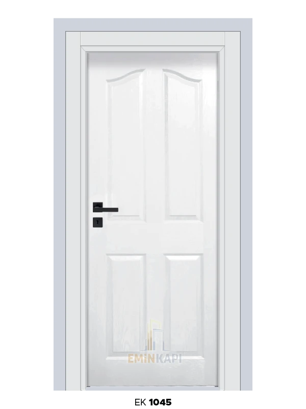
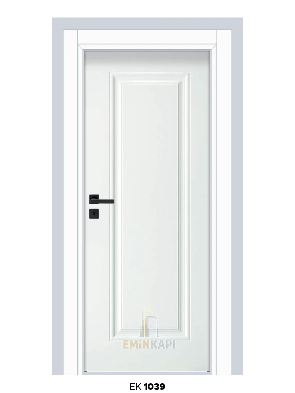
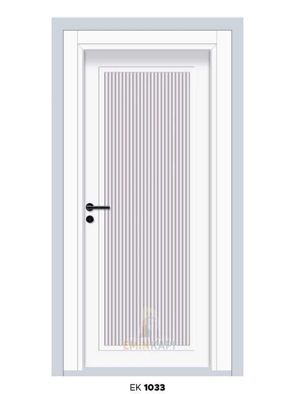

MDF İç Oda Kapısı Modelleri
Amerikan panel, melamin, kompozit, camlı ve lüks seriler — Osmaniye’de 15 yıllık MDF kapı tecrübesi.
Emin Kapı olarak Osmaniye’de uzun yıllardır MDF kapı sektöründe hizmet veriyoruz. MDF (orta yoğunluklu lif levha), ahşap liflerinin yüksek basınç ve ısı altında preslenmesiyle elde edilir; iç kapı üretiminde yaygın kullanılır.
Masif ahşaba göre daha ekonomiktir; doğru seçilmiş su geçirmez MDF ile çalışmaz ve şişmez. Lake, melamin, boya ve ahşap kaplama ile her tarzda üretilebilir. Fiyatlar kaplama türü, kalite, ölçü ve modele göre değişir — keşif sonrası net teklif verilir.

Panel seri
Amerikan Panel
Her türlü mekânla uyumlu Amerikan panel iç oda kapıları. Salon, yatak odası ve koridorlarda sık tercih edilir; ölçü ve modele göre fiyatlandırılır.
Ürün galerisini açDayanıklılık
Melamin Panel
MDF üzerine melamin kaplama; ahşap desenli, dayanıklı ve modern çizgi. Tüm odalarda kullanılabilir. Fiyat orta–yüksek segmentte, ölçü ve modele bağlıdır.
Melamin panel sayfası

Modern çizgi
Kompozit Panel
Kapıda modern çizgi, kompozit panel farkı. Mekânınızın mimarisine uyum sağlayan yüzey seçenekleriyle showroom’da inceleyebilirsiniz.
Kompozit panel sayfasıIşık & ferahlık
Camlı İç Kapı
Camlı iç kapı modelleri karanlık koridorları aydınlatır, mekânlar arası geçişi yumuşatır. MDF veya melamin panel üzerine cam bölme; üst kısımda veya boydan boya olabilir. Buzlu cam mahremiyet isterken ışık geçirir; deseni işlenmiş camlar estetik ve mahremiyeti birlikte sunar.
Güvenlik için uygun cam tipi önerilir; çocuklu evlerde lamine cam tercih edilebilir. Fiyat cam türü, ölçü ve modele göre değişir.
Camlı iç kapı sayfası

Üst segment
Lüks İç Kapı
Lüks iç kapı modelleri yalnızca bir geçiş noktası değil, evinizin karakterini yansıtan detaylardır. Gerçek ahşap kaplama (ceviz, meşe, dişbudak), premium lake, özel cam ve klasik oymalı seçenekler showroom’da sunulur.
Fiyatı malzeme, işçilik, ölçü ve montaj kalitesi belirler. Zamansız tasarımlara yatırım yapmanızı öneririz; kötü montaj en kaliteli kapıyı da bozar — deneyimli ekibimizle çalışıyoruz.
Lüks iç kapı rehberi Proje görüşmesiSık sorulanlar
MDF iç kapı hakkında
Hangi odaya hangi model uygun?
Salon ve yatak odasında lake veya Amerikan panel; tüm odalarda melamin; karanlık koridorlarda camlı; üst segment mekânlarda ahşap kaplamalı lüks seriler sık tercih edilir. Yerinde öneri için keşif talep edin.
MDF mi masif ahşap mı?
Bütçe ve kullanım ihtiyacına göre değişir. Ekonomik ve esnek çözüm için MDF; premium hissiyat için masif veya gerçek ahşap kaplama tercih edilebilir.
Showroom’da kaç model var?
Yüzlerce tasarım ve canlı örnek. Adnan Menderes Mah. Trafo Cd. No: 6/A — her gün 09:00–17:00.
Keşif
İç oda kapısı için arayın
Ölçü ve model netleşince teklif hazırlanır.